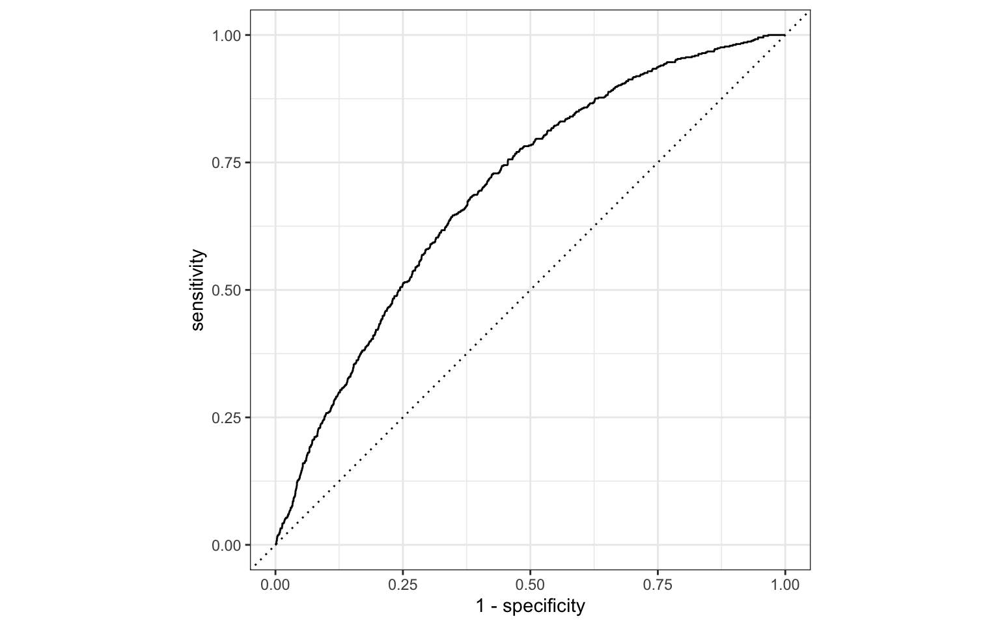
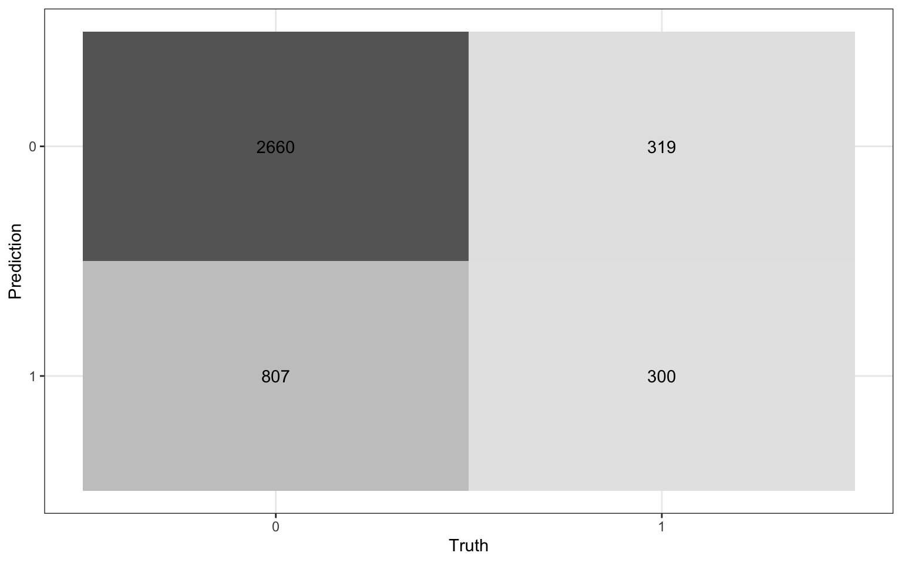
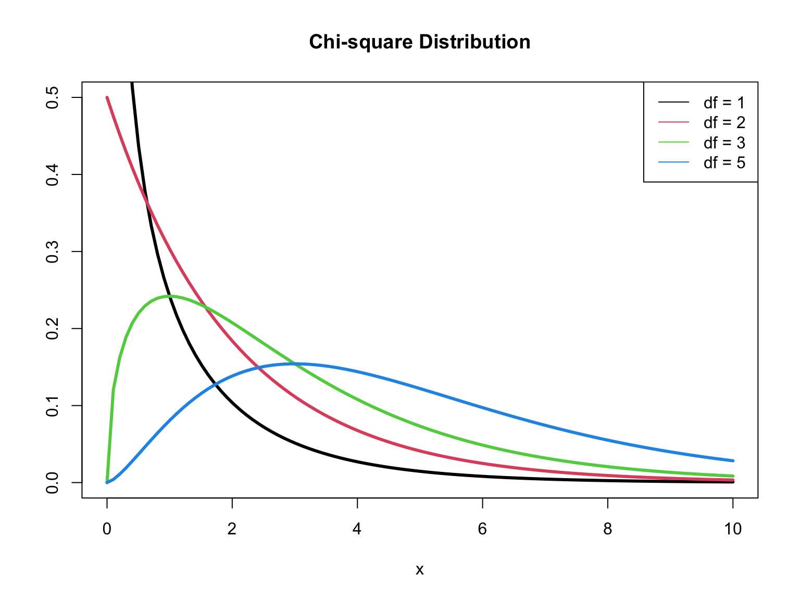

library(tidyverse)
library(tidymodels)
library(pROC)
library(knitr)
library(kableExtra)
# set default theme in ggplot2
ggplot2::theme_set(ggplot2::theme_bw())Logistic Regression: Model comparison
Announcements
HW 04 due April 10 - released later today
Team Feedback (email from TEAMMATES) due Tuesday, April 8 at 11:59pm (check email)
Next project milestone: Analysis and draft in April 11 lab
Statistics experience due April 22
Questions from this week’s content?
Topics
Comparing models using AIC and BIC
Test of significance for a subset of predictors
Computational setup
Risk of coronary heart disease
This data set is from an ongoing cardiovascular study on residents of the town of Framingham, Massachusetts. We want to examine the relationship between various health characteristics and the risk of having heart disease.
high_risk:- 1: High risk of having heart disease in next 10 years
- 0: Not high risk of having heart disease in next 10 years
age: Age at exam time (in years)totChol: Total cholesterol (in mg/dL)currentSmoker: 0 = nonsmoker, 1 = smokereducation: 1 = Some High School, 2 = High School or GED, 3 = Some College or Vocational School, 4 = College
Modeling risk of coronary heart disease
Using age, totChol, and currentSmoker
| term | estimate | std.error | statistic | p.value | conf.low | conf.high |
|---|---|---|---|---|---|---|
| (Intercept) | -6.673 | 0.378 | -17.647 | 0.000 | -7.423 | -5.940 |
| age | 0.082 | 0.006 | 14.344 | 0.000 | 0.071 | 0.094 |
| totChol | 0.002 | 0.001 | 1.940 | 0.052 | 0.000 | 0.004 |
| currentSmoker1 | 0.443 | 0.094 | 4.733 | 0.000 | 0.260 | 0.627 |
Review: ROC Curve + Model fit

# A tibble: 1 × 3
.metric .estimator .estimate
<chr> <chr> <dbl>
1 roc_auc binary 0.697Review: Classification
We will use a threshold of 0.2 to classify observations

Review: Classification

Compute the misclassification rate.
Compute sensitivity and explain what it means in the context of the data.
Compute specificity and explain what it means in the context of the data.
Model comparison
Which model do we choose?
| term | estimate |
|---|---|
| (Intercept) | -6.673 |
| age | 0.082 |
| totChol | 0.002 |
| currentSmoker1 | 0.443 |
| term | estimate |
|---|---|
| (Intercept) | -6.456 |
| age | 0.080 |
| totChol | 0.002 |
| currentSmoker1 | 0.445 |
| education2 | -0.270 |
| education3 | -0.232 |
| education4 | -0.035 |
Log-Likelihood
Recall the log-likelihood function
\[ \begin{aligned} \log L&(\boldsymbol{\beta}|x_1, \ldots, x_n, y_1, \dots, y_n) \\ &= \sum\limits_{i=1}^n[y_i \log(\pi_i) + (1 - y_i)\log(1 - \pi_i)] \end{aligned} \]
where \(\pi_i = \frac{\exp\{x_i^\mathsf{T}\boldsymbol{\beta}\}}{1 + \exp\{x_i^\mathsf{T}\boldsymbol{\beta}\}}\)
AIC & BIC
Estimators of prediction error and relative quality of models:
. . .
Akaike’s Information Criterion (AIC)1: \[AIC = -2\log L + 2 (p+1)\]
. . .
Schwarz’s Bayesian Information Criterion (BIC)2: \[ BIC = -2\log L + \log(n)\times(p+1)\]
AIC & BIC
\[ \begin{aligned} & AIC = \color{blue}{-2\log L} \color{black}{+ 2(p+1)} \\ & BIC = \color{blue}{-2\log L} + \color{black}{\log(n)\times(p+1)} \end{aligned} \]
. . .
First Term: Decreases as p increases
AIC & BIC
\[ \begin{aligned} & AIC = -2\log L + \color{blue}{2(p+1)} \\ & BIC = -2\log L + \color{blue}{\log(n)\times (p+1)} \end{aligned} \]
Second term: Increases as p increases
Using AIC & BIC
\[ \begin{aligned} & AIC = -2\log L + \color{red}{2(p+1)} \\ & BIC = -2 \log L + \color{red}{\log(n)\times(p+1)} \end{aligned} \]
Choose model with the smaller value of AIC or BIC
If \(n \geq 8\), the penalty for BIC is larger than that of AIC, so BIC tends to favor more parsimonious models (i.e. models with fewer terms)
AIC from the glance() function
Let’s look at the AIC for the model that includes age, totChol, and currentSmoker
glance(high_risk_fit)$AIC[1] 3232.812. . .
Calculating AIC
- 2 * glance(high_risk_fit)$logLik + 2 * (3 + 1)[1] 3232.812Comparing the models using AIC
Let’s compare the full and reduced models using AIC.
glance(high_risk_fit_reduced)$AIC[1] 3232.812glance(high_risk_fit_full)$AIC[1] 3231.6Based on AIC, which model would you choose?
Comparing the models using BIC
Let’s compare the full and reduced models using BIC
glance(high_risk_fit_reduced)$BIC[1] 3258.074glance(high_risk_fit_full)$BIC[1] 3275.807Based on BIC, which model would you choose?
Drop-in-deviance test
Drop-in-deviance test
We will use a drop-in-deviance test (aka Likelihood Ratio Test) to test
the overall statistical significance of a logistic regression model
the statistical significance of a subset of coefficients in the model
Deviance
The deviance is a measure of the degree to which the predicted values are different from the observed values (compares the current model to a “saturated” model)
In logistic regression,
\[ D = -2 \log L \]
\(D \sim \chi^2_{n - p - 1}\) ( \(D\) follows a Chi-square distribution with \(n - p - 1\) degrees of freedom)3
Note: \(n - p - 1\) a the degrees of freedom associated with the error in the model (like residuals)
\(\chi^2\) distribution

Test for overall significance
We can test the overall significance for a logistic regression model, i.e., whether there is at least one predictor with a non-zero coefficient
\[ \begin{aligned} &H_0: \beta_1 = \dots = \beta_p = 0 \\ &H_a: \beta_j \neq 0 \text{ for at least one } j \end{aligned} \]
. . .
The drop-in-deviance test for overall significance compares the fit of a model with no predictors to the current model.
Drop-in-deviance test statistic
Let \(L_0\) and \(L_a\) be the likelihood functions of the model under \(H_0\) and \(H_a\), respectively. The test statistic is
\[ \begin{aligned} G = D_0 - D_a &= (-2\log L_0) - (-2\log L_a)\\[5pt] & = -2(\log L_0 - \log L_a) \\[5pt] &= -2\sum_{i=1}^n \Big[ y_i \log \Big(\frac{\hat{\pi}^0}{\hat{\pi}^a_i}\Big) + (1 - y_i)\log \Big(\frac{1-\hat{\pi}^0}{1-\hat{\pi}^a_i}\Big)\Big] \end{aligned} \]
where \(\hat{\pi}^0\) is the predicted probability under \(H_0\) and \(\hat{\pi}_i^a = \frac{\exp \{x_i^\mathsf{T}\boldsymbol{\beta}\}}{1 + \exp \{x_i^\mathsf{T}\boldsymbol{\beta}\}}\) is the predicted probability under \(H_a\) 4
Drop-in-deviance test statistic
\[ G = -2\sum_{i=1}^n \Big[ y_i \log \Big(\frac{\hat{\pi}^0}{\hat{\pi}^a_i}\Big) + (1 - y_i)\log \Big(\frac{1-\hat{\pi}^0}{1-\hat{\pi}^a_i}\Big)\Big] \]
. . .
When \(n\) is large, \(G \sim \chi^2_p\), ( \(G\) follows a Chi-square distribution with \(p\) degrees of freedom)
The p-value is calculated as \(P(\chi^2 > G)\)
Large values of \(G\) (small p-values) indicate at least one \(\beta_j\) is non-zero
Heart disease model: drop-in-deviance test
\[ \begin{aligned} &H_0: \beta_{age} = \beta_{totChol} = \beta_{currentSmoker} = 0 \\ &H_a: \beta_j \neq 0 \text{ for at least one }j \end{aligned}\]
. . .
Fit the null model (we’ve already fit the alternative model)
null_model <- glm(high_risk ~ 1, data = heart_disease, family = "binomial")| term | estimate | std.error | statistic | p.value |
|---|---|---|---|---|
| (Intercept) | -1.72294 | 0.0436342 | -39.486 | 0 |
Heart disease model: drop-in-deviance test
Calculate the log-likelihood for the null and alternative models
(L_0 <- glance(null_model)$logLik)[1] -1737.735(L_a <- glance(high_risk_fit)$logLik)[1] -1612.406. . .
Calculate the likelihood ratio test statistic
(G <- -2 * (L_0 - L_a))[1] 250.6572. . .
Heart disease model: likelihood ratio test
Calculate the p-value
(p_value <- pchisq(G, df = 3, lower.tail = FALSE))[1] 4.717158e-54. . .
Conclusion
The p-value is small, so we reject \(H_0\). The data provide evidence that at least one predictor in the model has a non-zero coefficient.
Why use overall test?
Why do we use a test for overall significance instead of just looking at the test for individual coefficients?5
. . .
Suppose we have a model such that \(p = 100\) and \(H_0: \beta_1 = \dots = \beta_{100} = 0\) is true
. . .
About 5% of the p-values for individual coefficients will be below 0.05 by chance.
So we expect to see 5 small p-values if even no linear association actually exists.
Therefore, it is very likely we will see at least one small p-value by chance.
The overall test of significance does not have this problem. There is only a 5% chance we will get a p-value below 0.05, if a relationship truly does not exist.
Test a subset of coefficients
Testing a subset of coefficients
Suppose there are two models:
Reduced Model: includes predictors \(x_1, \ldots, x_q\)
Full Model: includes predictors \(x_1, \ldots, x_q, x_{q+1}, \ldots, x_p\)
We can use a drop-in-deviance test to determine if any of the new predictors are useful
. . .
\[ \begin{aligned} &H_0: \beta_{q+1} = \dots = \beta_p = 0\\ &H_a: \beta_j \neq 0 \text{ for at least one }j \end{aligned} \]
Drop-in-deviance test
\[ \begin{aligned} &H_0: \beta_{q+1} = \dots = \beta_p = 0\\ &H_a: \beta_j \neq 0 \text{ for at least one }j \end{aligned} \]
. . .
The test statistic is
\[ \begin{aligned} G = D_{reduced} - D_{full} &= (-2\log L_{reduced}) - (-2 \log L_{full}) \\ &= -2(\log L_{reduced} - \log L_{full}) \end{aligned} \]
. . .
The p-value is calculated using a \(\chi_{\Delta df}^2\) distribution, where \(\Delta df\) is the number of parameters being tested (the difference in number of parameters between the full and reduced model).
Example: Include education?
Should we include education in the model?
Reduced model:
age,totChol,currentSmokerFull model:
age,totChol,currentSmoker,education
. . .
\[ \begin{aligned} &H_0: \beta_{ed2} = \beta_{ed3} = \beta_{ed4} = 0 \\ &H_a: \beta_j \neq 0 \text{ for at least one }j \end{aligned} \]
Example: Include education?
reduced_model <- glm(high_risk ~ age + totChol + currentSmoker,
data = heart_disease, family = "binomial")
full_model <- glm(high_risk ~ age + totChol + currentSmoker + education,
data = heart_disease, family = "binomial"). . .
Calculate deviances
(deviance_reduced <- -2 * glance(reduced_model)$logLik)[1] 3224.812(deviance_full <- -2 * glance(full_model)$logLik)[1] 3217.6. . .
Calculate test statistic
(G <- deviance_reduced - deviance_full)[1] 7.212113Example: Include education?
Calculate p-value
pchisq(G, df = 3, lower.tail = FALSE)[1] 0.06543567. . .
What is your conclusion? Would you include education in the model that already has age, totChol, currentSmoker?
Drop-in-deviance test in R
Conduct the drop-in-deviance test using the anova() function in R with option test = "Chisq"
anova(reduced_model, full_model, test = "Chisq") |>
tidy() |>
kable(digits = 3)| term | df.residual | residual.deviance | df | deviance | p.value |
|---|---|---|---|---|---|
| high_risk ~ age + totChol + currentSmoker | 4082 | 3224.812 | NA | NA | NA |
| high_risk ~ age + totChol + currentSmoker + education | 4079 | 3217.600 | 3 | 7.212 | 0.065 |
Add interactions with currentSmoker?
| term | df.residual | residual.deviance | df | deviance | p.value |
|---|---|---|---|---|---|
| high_risk ~ age + totChol + currentSmoker | 4082 | 3224.812 | NA | NA | NA |
| high_risk ~ age + totChol + currentSmoker + currentSmoker * age + currentSmoker * totChol | 4080 | 3222.377 | 2 | 2.435 | 0.296 |
Questions from this week’s content?
Recap
Introduced model comparison for logistic regression using
AIC and BIC
Drop-in-deviance test
References
Wilks, SS. 1935. “The Likelihood Test of Independence in Contingency Tables.” The Annals of Mathematical Statistics 6 (4): 190–96.
Footnotes
Akaike, Hirotugu. “A new look at the statistical model identification.” IEEE transactions on automatic control 19.6 (1974): 716-723.↩︎
Schwarz, Gideon. “Estimating the dimension of a model.” The annals of statistics (1978): 461-464.↩︎
Example from Introduction to Statistical Learning↩︎